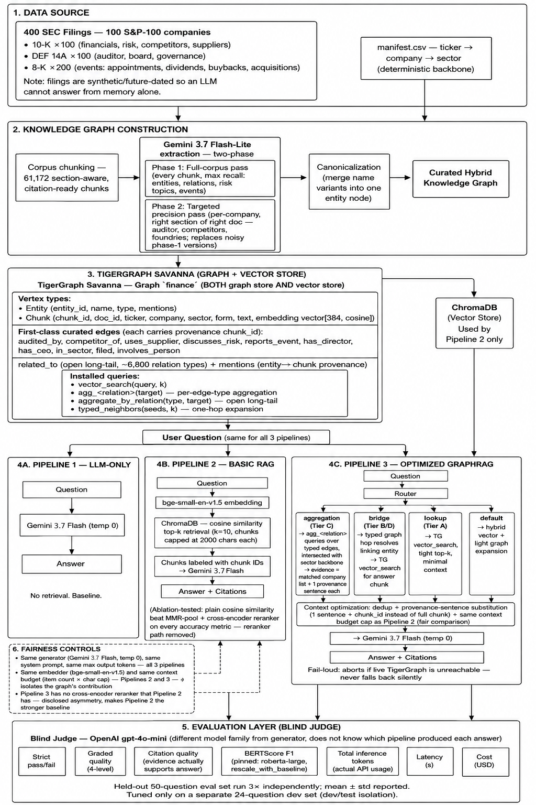

Run it yourself
Three pipelines, the same question, side by side, graded against a verified answer key. The list is restricted to questions GraphRAG gets right — every question it gets wrong is still in the per-question tables further down, with the verdict.
recorded when that is what happened.SEC 10-K / DEF 14A filings · 50 questions · 100 S&P-100 companies · different corpus, different schema, real entities
A second corpus with none of the first one's properties: real companies the model has already read, extraction-built rather than metadata-built, numbers rather than name sets. Run under a corrected config — 8,192-token budget and no-refusal prompt applied to all arms, both of which raised the baseline too.
| METRIC | LLM only | Basic RAG | GraphRAG |
|---|---|---|---|
| Strict pass (exact) | 5/50 | 16/50 | 23/50 |
| Blind LLM judge | 38.3% | 58.2% | 65.7% |
| Tokens / question | 372 | 4,846 | 2,545 |
Walmart $611,289M; Apple $383,285M when gold was $713.2B and $416.2B — real figures from the wrong fiscal year. For financial QA a wrong number is a wrong answer, so strict pass is the figure to trust, not the percentage.| TIER | LLM ONLY | BASIC RAG | GRAPHRAG |
|---|---|---|---|
| A · Single lookup — one number in one filing | 3/8 | 7/8 | 4/8 |
| B · Two-hop bridge — relation, then a number | 1/16 | 5/16 | 6/16 |
| C · Aggregation — every company matching a property | 1/20 | 3/20 | 12/20 |
| D · Cross-doc / temporal | 0/6 | 1/6 | 1/6 |
EnterpriseRAG-Bench 20k · 50 questions · 20 single-doc / 10 directory / 20 multi-hop · single run
Three pipelines over the same 20,364-document corpus. Same generator (gemini-3.6-flash), same embedder (bge-small-en-v1.5), same blind judge (gemini-3.1-pro-preview). GraphRAG uses TigerGraph Savanna as graph and vector store — so does the baseline, which removes the vector store as a variable.
| METRIC | LLM only | Basic RAG | GraphRAG |
|---|---|---|---|
| Strict pass (exact set) | 0/50 | 26/50 | 50/50 |
| Blind LLM judge | 0.8% | 62.3% | 100.0% |
| BERTScore F1 | 0.852 | 0.934 | 1.000 |
| Complete failures (score 0) | 49 | 13 | 0 |
| Tokens / question | 273 | 5,312 | 2,733 |
| TIER | LLM ONLY | BASIC RAG | GRAPHRAG |
|---|---|---|---|
| Single document — one doc holds the answer | 0/20 | 16/20 | 20/20 |
| Directory lookup — one hop in the org chart | 0/10 | 10/10 | 10/10 |
| Multi-hop — needs a join across documents | 0/20 | 0/20 | 20/20 |
Overfitting controls
The 50 questions above were developed against. These were not.
| METRIC | Basic RAG | GraphRAG |
|---|---|---|
| Strict pass (exact) | 26/50 | 50/50 |
| Blind LLM judge | 59.1% | 100.0% |
| Tokens / question | 5,489 | 5,443 |
How it works
The diagram below is the SEC round: filings chunked, entities and relations extracted by an LLM in two passes, canonicalised into a curated graph, then three pipelines judged blind. The enterprise build reuses the harness and replaces the expensive half — see the note under the diagram.

enterprise, not finance, and the judge is gemini-3.1-pro-preview rather than gpt-4o-mini.The full working
Including the ones the graph loses. PART means partially correct — some of the gold set returned, not all.
| What it is | A fictional SaaS company's internal record — the whole point, because nothing in it is answerable from model memory. That is what makes the no-retrieval arm's 0.8% a control rather than a curiosity. |
| Documents | 20,364slack 11,154 · gmail 4,739 · linear 1,378 · google_drive 979 · hubspot 586 · fireflies 397 · directory 364 · github 314 · jira 239 · confluence 214 |
| Size | 114.3M characters ≈ 28.6M tokensChunked into 73,613 retrievable chunks |
| Graph | 128,282 provenance edges, 11 relation typesparticipated_in 88,188 · has_label 11,546 · in_channel 11,146 · authored 6,645 · in_team 5,377 · reports_to 160 |
| Built from | Metadata fields only — no LLM extractionAuthor, channel, department and project were already on every document. employee_directory.yaml (167 people) supplies the org chart and is the one authored input. |
| Questions | 50 — 20 single-document, 10 directory lookup, 20 multi-hopGenerated from the graph, then the answer key was independently re-derived from the raw documents, 30/30. |
| ID | TIER | LLM ONLY | BASIC RAG | GRAPHRAG | QUESTION | GOLD | TOKENS |
|---|---|---|---|---|---|---|---|
| MX01 | single doc | FAIL | FAIL | PASS | Who authored the document '20270330 milestone gatekeeper approvals'? | jordan_blake | 3,377 |
| MX02 | single doc | FAIL | PASS | PASS | Who authored the document '2025 02 11 hosted api latency fallback activated'? | Ava Chen | 2,837 |
| MX03 | single doc | FAIL | PASS | PASS | Who authored the document 'ENG 913579 attention path prefetcher and kernel winnower'? | Aisha Khan | 2,772 |
| MX04 | single doc | FAIL | PASS | PASS | Who authored the document '20270509 lyra onboarding sig caiq intake'? | vivek_kulkarni | 2,861 |
| MX05 | single doc | FAIL | FAIL | PASS | Who authored the document '20270610 processor roster handoff kms sourcing'? | jonas_weber | 2,333 |
| MX06 | single doc | FAIL | PASS | PASS | Who authored the document '20270521 medbridge security subprocessor checkin'? | karthik_iyer | 3,044 |
| MX07 | single doc | FAIL | FAIL | PASS | Who authored the document '20291107 arcadia evening walkthrough reschedule'? | vivek_kulkarni | 2,819 |
| MX08 | single doc | FAIL | PASS | PASS | Who authored the document '20261121 slot swap proxy invite widget handoff'? | priya_natarajan | 2,778 |
| MX09 | single doc | FAIL | PASS | PASS | Who authored the document 'ENG 411007 stratified hit ensemble ttl runbook'? | Miguel Alvarez | 2,317 |
| MX10 | single doc | FAIL | PASS | PASS | Who authored the document '20270420 qbr runway stitch account onepagers'? | vanessa_ortiz | 2,944 |
| MX11 | single doc | FAIL | PASS | PASS | Which Slack channel is the message '5390001111 tiny astronaut toast emoji echo' in? | random | 2,835 |
| MX12 | single doc | FAIL | PASS | PASS | Which Slack channel is the message '1898765432 pin decay orchestration and grace unification' in? | product | 2,692 |
| MX13 | single doc | FAIL | PASS | PASS | Which Slack channel is the message '3187654321 token identity wobble on embed proj sanity' in? | eng-ml | 3,469 |
| MX14 | single doc | FAIL | PASS | PASS | Which Slack channel is the message '2176543210 kms rewrap edge cases and rbac clarify' in? | eng-security | 2,839 |
| MX15 | single doc | FAIL | PASS | PASS | Which Slack channel is the message '2755550000 legal hold stale snapshot service account check' in? | eng-security | 2,870 |
| MX16 | single doc | FAIL | PASS | PASS | Which Slack channel is the message '1918765432 vxlan mtu probe regression canary' in? | eng-infra | 3,512 |
| MX17 | single doc | FAIL | PASS | PASS | Which Slack channel is the message '1950012345 shim routing decisionflow' in? | eng-platform | 2,760 |
| MX18 | single doc | FAIL | PASS | PASS | Which Slack channel is the message '1789123456 sdr emea first week access' in? | sales | 2,782 |
| MX19 | single doc | FAIL | PASS | PASS | Which Slack channel is the message '5698765432 marketplace edgebox gTM readiness' in? | partnerships | 2,714 |
| MX20 | single doc | FAIL | FAIL | PASS | Which Slack channel is the message '1845678901 onprem handshake networking handoff' in? | sales | 2,950 |
| MX21 | single dir | FAIL | PASS | PASS | Who reports directly to Vikram Singh? | Emily Zhao, Robert King | 1,859 |
| MX22 | single dir | FAIL | PASS | PASS | Who reports directly to Kimberly Park? | Aly Nguyen, Daniela Costa, Sergio Alvarez | 1,868 |
| MX23 | single dir | FAIL | PASS | PASS | Who reports directly to Alex Martinez? | Elliot Price, Jean-Paul Laurent, Monica Patel, Renee Sullivan, Sonia Bhandari | 2,038 |
| MX24 | single dir | FAIL | PASS | PASS | Who reports directly to Rafael Mendes? | Aisha Bello, Christine Wong, Jacob Stein, Tomáš Novák | 1,935 |
| MX25 | single dir | FAIL | PASS | PASS | Who is Devon Price's manager? | Dylan Brooks | 1,884 |
| MX26 | single dir | FAIL | PASS | PASS | Who is Olivia Grant's manager? | Karthik Iyer | 1,862 |
| MX27 | single dir | FAIL | PASS | PASS | Who is Hassan Mirza's manager? | Karthik Iyer | 1,873 |
| MX28 | single dir | PART | PASS | PASS | Which people are in the Operations / IT department? | David Kim, Natalie Chen | 1,835 |
| MX29 | single dir | FAIL | PASS | PASS | Which people are in the Finance department? | Emily Stone, Jorge Ramirez, Laura Bennett, Rishi Malhotra | 1,867 |
| MX30 | single dir | FAIL | PASS | PASS | Which people are in the People department? | Aly Nguyen, Daniela Costa, Kimberly Park, Sergio Alvarez | 1,878 |
| MX31 | multi hop | FAIL | FAIL | PASS | Which Slack channels contain documents involving both Allison Grant and Sergio Costa? | eng-oncall, eng-platform, eng-sre, postmortems | 2,754 |
| MX32 | multi hop | FAIL | PART | PASS | Which Slack channels contain documents involving both Ibrahim Khan and Wei Chen? | devex, eng-platform | 2,832 |
| MX33 | multi hop | FAIL | PART | PASS | Which Slack channels do the people reporting to Marcus Lin take part in? | eng-platform, eng-security, incidents | 1,965 |
| MX34 | multi hop | FAIL | FAIL | PASS | Which people from the Product department take part in the #incidents Slack channel? | Marissa Cole, Vivek Kulkarni | 2,809 |
| MX35 | multi hop | FAIL | PART | PASS | Which Slack channels contain documents involving both Rafael Mendes and Victor Alvarez? | eng-infra, eng-sre, incidents | 3,712 |
| MX36 | multi hop | FAIL | FAIL | PASS | Which Slack channels contain documents involving both Daniel Carter and Naomi Feldman? | docs, sales | 3,808 |
| MX37 | multi hop | FAIL | FAIL | PASS | Which people from the Product department take part in the #product Slack channel? | Marissa Cole, Paula Mendes | 2,091 |
| MX38 | multi hop | FAIL | PART | PASS | Which Slack channels contain documents involving both Sean Gallagher and Vivek Kulkarni? | eng-releases, incidents | 3,790 |
| MX39 | multi hop | FAIL | PART | PASS | Which Slack channels contain documents involving both Dev Patel and Rafael Mendes? | announcements, eng-oncall, eng-releases, incidents, support | 3,090 |
| MX40 | multi hop | FAIL | PART | PASS | Which Slack channels do the people reporting to Sofia Ivanova take part in? | eng-infra, eng-runtime | 2,881 |
| MX41 | multi hop | FAIL | FAIL | PASS | Which Slack channels contain documents involving both Allison Grant and Ibrahim Khan? | devex, incidents | 3,756 |
| MX42 | multi hop | FAIL | PART | PASS | Which Slack channels contain documents involving both Aisha Bello and Mina Haddad? | eng-platform, eng-sre, incidents | 3,799 |
| MX43 | multi hop | FAIL | PART | PASS | Which Slack channels do the people reporting to Vikram Singh take part in? | eng-infra, eng-sre, incidents | 2,484 |
| MX44 | multi hop | FAIL | FAIL | PASS | Which people from the Product department take part in the #sales Slack channel? | Chris Osei, Naomi Feldman, Nikhil Sharma | 2,209 |
| MX45 | multi hop | FAIL | FAIL | PASS | Which Slack channels do the people reporting to Dr. Maya Srinivasan take part in? | eng-ml, eng-releases, product | 3,263 |
| MX46 | multi hop | FAIL | FAIL | PASS | Which people from the Infrastructure & SRE department take part in the #eng-runtime Slack channel? | Aisha Bello, Rafael Mendes, Sean Gallagher, Tomáš Novák | 2,599 |
| MX47 | multi hop | FAIL | PART | PASS | Which Slack channels contain documents involving both Markus Klein and Talia Benson? | eng-sre, product | 3,776 |
| MX48 | multi hop | FAIL | PART | PASS | Which Slack channels do the people reporting to Laura Bennett take part in? | design, incidents, sales | 3,135 |
| MX49 | multi hop | FAIL | FAIL | PASS | Which people from the Product department take part in the #announcements Slack channel? | Marissa Cole, Paula Mendes | 2,465 |
| MX50 | multi hop | FAIL | PART | PASS | Which Slack channels do the people reporting to Monica Patel take part in? | devex, eng-platform, incidents, new-hires, support | 3,022 |
| What it is | Real filings from 100 S&P-100 companies. The model has read these, which is visible in the numbers: the no-retrieval arm scores 38% here against 0.8% on the fictional corpus. |
| Documents | 40010-K ×100 (financials, risk, competitors) · DEF 14A ×100 (auditor, board, governance) · 8-K ×200 (appointments, dividends, buybacks, acquisitions) |
| Size | 87.0M characters ≈ 21.7M tokensChunked into 61,777 section-aware chunks |
| Built from | Two-phase LLM extraction, then canonicalisationThe expensive path — see the architecture diagram above. This is what the enterprise build avoided. |
| Questions | 50 held out — A 8 single-lookup, B 16 two-hop bridge, C 20 aggregation, D 6 cross-docTuned on a separate 24-question dev set, so the 50 were never developed against. |
| Answer shape | Numbers and dates, not name setsSo set-F1 does not transfer; correctness here is the blind judge's call and strict means it awarded 100. |
| ID | TIER | LLM ONLY | BASIC RAG | GRAPHRAG | QUESTION | GOLD | TOKENS |
|---|---|---|---|---|---|---|---|
| EQ01 | A | FAIL | PASS | PASS | Apple's total net sales for fiscal year 2025? | $416,161M (~$416.2B) | 4,201 |
| EQ02 | A | FAIL | PASS | PASS | NVIDIA's total revenue for fiscal year 2026? | $215,938M (~$215.9B) | 3,518 |
| EQ03 | A | FAIL | PART | PART | JPMorgan Chase's net income for FY ended Dec 31, 2025? | $57,048M (~$57.0B), down 2% YoY | 4,887 |
| EQ04 | A | FAIL | PASS | FAIL | ExxonMobil's total revenues and other income for FY2025? | $332,238M (~$332.2B) | 4,375 |
| EQ05 | A | FAIL | PASS | PASS | Coca-Cola's net operating revenues for FY2025? | $47,941M (~$47.9B) | 4,457 |
| EQ06 | A | PASS | PASS | PART | On what date does Microsoft's FY2025 end? | June 30, 2025 | 3,344 |
| EQ07 | A | PASS | PASS | PASS | Who is Amazon's Chief Executive Officer? | Andrew R. Jassy | 2,979 |
| EQ08 | A | PASS | PASS | FAIL | Netflix relies on which cloud provider to operate its streaming service? | Amazon Web Services (AWS) | 2,361 |
| EQ09 | B | PART | FAIL | FAIL | The company that appointed John Ternus as CEO — what were its total net sales in FY2025? | Apple; $416,161M (~$416.2B) | 5,244 |
| EQ10 | B | PART | FAIL | PART | The company that agreed to acquire Apogee Therapeutics — who is its independent auditor? | AbbVie; Ernst & Young LLP | 5,030 |
| EQ11 | B | FAIL | FAIL | PASS | Besides Netflix, which company authorized a $25B share-repurchase program in 2026? | Adobe | 1,364 |
| EQ12 | B | PART | FAIL | FAIL | Company that formed a 50/50 joint venture with BT Group plc — who is its auditor? | Verizon; Ernst & Young LLP | 2,677 |
| EQ13 | B | PART | PART | PART | Which had the higher fiscal-year net income: JPMorgan Chase or ExxonMobil? | JPMorgan Chase ($57.0B vs ExxonMobil $28.8B) | 2,426 |
| EQ14 | B | PART | PART | PASS | Which had the higher fiscal-year revenue: Walmart or Apple? | Walmart ($713.2B vs Apple $416.2B) | 6,876 |
| EQ15 | B | PART | FAIL | PASS | Which spent more on R&D in its latest fiscal year: Apple or NVIDIA? | Apple ($34.55B vs NVIDIA $18.50B) | 5,373 |
| EQ16 | B | FAIL | PART | FAIL | The company that appointed Jay Hoag as Chairman in 2026 — what share-repurchase amount did it authorize that year? | Netflix; $25 billion | 5,848 |
| EQ17 | B | PART | PASS | PASS | Amgen named an incoming CFO in 2026 — who is he, and who is Amgen's auditor? | Thomas Dittrich; Ernst & Young LLP | 2,838 |
| EQ18 | B | PART | PASS | PART | Chevron's departing Chief Legal Officer (per its 2026 8-K) is whom, and who is Chevron's auditor? | R. Hewitt Pate; PricewaterhouseCoopers LLP | 2,911 |
| EQ19 | B | PASS | PASS | PART | AMD names which two companies as its principal competitors in Data Center and discrete graphics? | Intel and Nvidia | 549 |
| EQ20 | B | FAIL | FAIL | FAIL | Which Deloitte-audited company had a fiscal year ending June 30, 2025? | Microsoft | 1,113 |
| EQ21 | B | FAIL | PART | PART | In Apple's April 2026 8-K, who was appointed CEO, and what role will Tim Cook move into? | John Ternus appointed CEO; Tim Cook moves to Executive Chair of the Board | 3,196 |
| EQ22 | B | PART | PASS | PASS | AMD's new revolving credit facility (May 2026 8-K) names which bank as administrative agent, and which was agent on the facility it replaced? | New: JPMorgan Chase Bank, N.A.; prior (Apr 2022): Wells Fargo Bank, N.A. | 3,148 |
| EQ23 | B | PART | FAIL | FAIL | Among the companies that name TSMC as a foundry, which one had the highest fiscal-year revenue? | NVIDIA ($215.9B; vs AMD, AVGO, INTC, QCOM) | 460 |
| EQ24 | B | FAIL | PASS | PASS | By how much did Caterpillar raise its quarterly dividend (June 2026 8-K), and to what new amount? | +$0.12, from $1.51 to $1.63/share | 2,802 |
| EQ25 | C | PART | PART | PART | List all S&P-100 companies in the dataset audited by KPMG. | ACN, ADBE, BNY, COST, EMR, GD, HD, PEP, PFE, V, WFC (11) | 1,050 |
| EQ26 | C | PASS | PART | PASS | Which companies in the dataset name TSMC as a foundry/manufacturing partner? | AMD, AVGO, INTC, NVDA, QCOM | 463 |
| EQ27 | C | PART | PASS | PASS | Two companies list Indra Nooyi as a member of their board — which two? | Amazon (AMZN), Honeywell (HON) | 358 |
| EQ28 | C | PART | PASS | PASS | Ellen Kullman serves on the boards of which two dataset companies? | Amgen (AMGN), Goldman Sachs (GS) | 355 |
| EQ29 | C | PART | PASS | FAIL | F. William McNabb III is a director at which two dataset companies? | IBM, UnitedHealth (UNH) | 651 |
| EQ30 | C | PART | PART | PASS | Which Energy-sector companies discuss climate change as a risk factor in their 10-K? | Chevron (CVX), ExxonMobil (XOM), ConocoPhillips (COP) | 1,030 |
| EQ31 | C | PART | PART | PASS | Which Utilities-sector companies address climate change in their 10-K? | Duke (DUK), NextEra (NEE), Southern (SO) | 1,020 |
| EQ32 | C | PART | PART | PART | Which Health-Care companies mention weight-loss / obesity (GLP-1) drugs in their 10-K? | ABBV, AMGN, CVS, ISRG, LLY, MDT, MRK, PFE ‡ | 960 |
| EQ33 | C | PART | PART | FAIL | Besides health-care companies, which consumer companies flag GLP-1 / weight-loss drugs as a business risk? | KO, MCD, MDLZ, PEP, SBUX ‡ | 807 |
| EQ34 | C | FAIL | PART | PART | Which companies declared a cash dividend via an 8-K in this dataset? | AIG ($0.50), Caterpillar ($1.63), Costco ($1.47), Oracle ($1,625 pref.+common), P&G ‡ | 986 |
| EQ35 | C | FAIL | PART | PASS | Which companies authorized a $25 billion share-repurchase program via an 8-K? | Adobe, Netflix | 479 |
| EQ36 | C | PART | PART | PASS | Which KPMG-audited companies are in the Consumer Staples sector? | PepsiCo (PEP), Costco (COST) | 539 |
| EQ37 | C | PART | PART | PART | Which KPMG-audited companies are in the Financials sector? | BNY Mellon (BNY), Wells Fargo (WFC); + Visa (V) if classed Financials | 690 |
| EQ38 | C | PART | PART | PASS | Among the companies that name TSMC as a foundry, which are audited by Ernst & Young? | AMD, INTC | 556 |
| EQ39 | C | PART | FAIL | PASS | Among the companies that name TSMC as a foundry, which are audited by PricewaterhouseCoopers? | AVGO, NVDA, QCOM | 751 |
| EQ40 | C | PART | PART | PASS | Among Health-Care companies that mention obesity/weight-loss drugs, which are audited by Ernst & Young? | ABBV, AMGN, CVS, LLY | 1,048 |
| EQ41 | C | PART | FAIL | PASS | Which Deloitte-audited companies are in the Health-Care sector? | Bristol-Myers Squibb (BMY), UnitedHealth (UNH) | 508 |
| EQ42 | C | PART | PART | PART | Among the dataset's semiconductor and networking companies, which explicitly name NVIDIA as a competitor? | AMD, CSCO, INTC, QCOM | 563 |
| EQ43 | C | PART | FAIL | PASS | Among companies that name NVIDIA as a competitor, which are audited by PricewaterhouseCoopers? | CSCO, QCOM | 738 |
| EQ44 | C | FAIL | PART | PART | How many dataset companies does each Big Four firm audit? | Ernst & Young 35, PwC 29, Deloitte 25, KPMG 11 | 5,468 |
| EQ45 | D | FAIL | PART | PART | Amgen's CFO transition (2026): when does the outgoing CFO retire, and when does the incoming CFO start? | Peter H. Griffith retires as CFO Aug 31, 2026 (EVP until Jan 31, 2027); Thomas Dittrich effective Sept 1, 2026 | 4,726 |
| EQ46 | D | FAIL | PART | PART | Put these 2026 buyback authorizations in chronological order: Adobe $25B, Netflix +$25B, Accenture +$2B, Morgan Stanley $20B. | Adobe (Apr 21) → Netflix (Apr 22) → Accenture (Jun 23) → Morgan Stanley (Jun 24) | 5,079 |
| EQ47 | D | PART | PART | PART | Apple filed two 8-Ks in April 2026 (Apr 20, Apr 30). What event does each report? | Apr 20 = CEO transition (Ternus); Apr 30 = Q2 FY26 earnings / results of operations | 4,204 |
| EQ48 | D | PART | PART | PART | The company that expanded a productivity/restructuring program on April 30, 2026 — name it, its auditor, and the revised total pre-tax charge range. | Colgate-Palmolive; PwC; revised to $350M–$550M | 5,910 |
| EQ49 | D | FAIL | PART | PART | Cisco's May 2026 restructuring 8-K funds which growth areas, and who is Cisco's auditor? | Silicon, optics, security, and AI; PwC | 3,656 |
| EQ50 | D | FAIL | PASS | PASS | What quarterly cash dividend per share did Costco declare in its July 2026 8-K? | $1.47 per share | 2,677 |
Limits
Citations: [1],[2],[3] having been given no context at all.results/enterprise/*.jsonl by demo/build_report.py at build time. None are typed by hand.